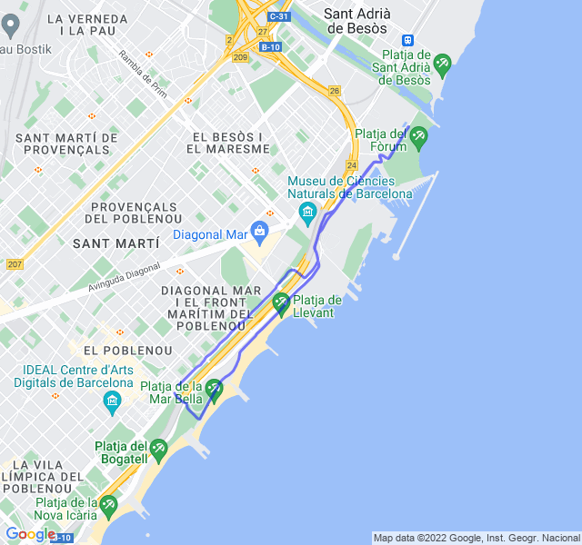

15x100 in salita
| 1 min read
Poche nuvole, 29°C, Percepito 33°C, Umidità 75%, Vento 4m/s da SSO

Grande umidità... l'ideale per delle delle ripetute in salita?
Si vede la scia di sudore lascaita sull'asfalto?
In generale è andata abbastanza bene, forse un po' meno brillante delle ultime fatte settiman scorsa ma ci può stare visto che ieri ho fatto un variato.
